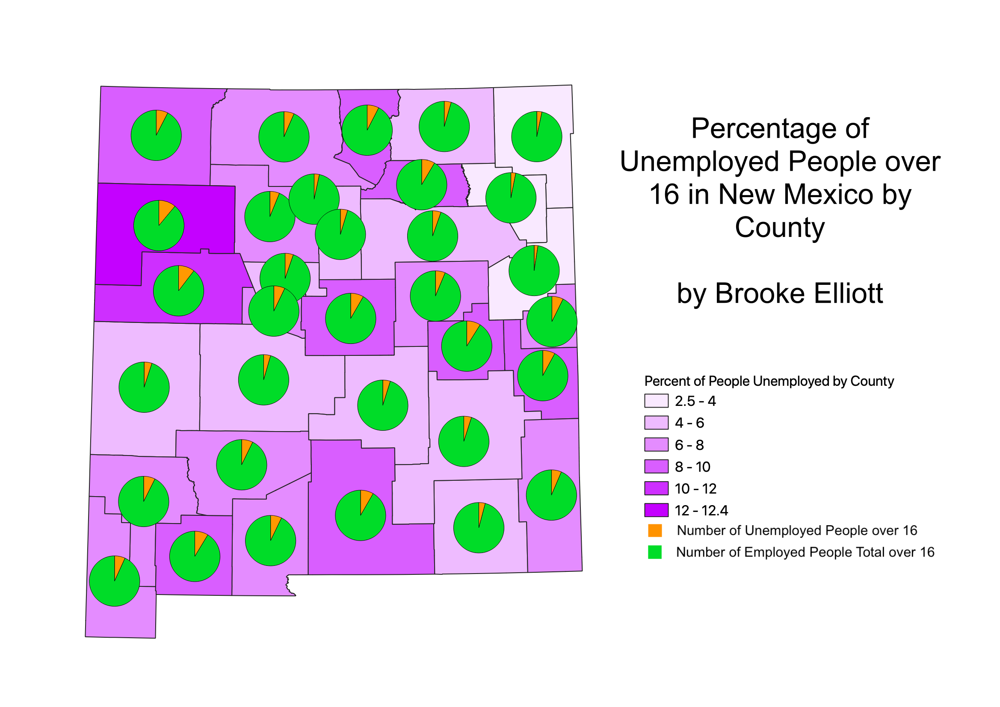

Census Data Ratios
by Brooke Elliott
RATIO CHOROPLETH: This map is a choropleth that depicts the percentage of unemployed citizens over 16 by county in New Mexico out of all citizens over 16 in New Mexico.
This method of data categorization is one of the easiest to produce, as it only requires the map creator to divide the number of unemployed people over 16 in a county by the total
number of people over 16 in a county and then multiply by 100 before selecting a "graduated" symbology in QGIS.
The data for this map was gathered in 2020 and uses American Community Survey 5-year estimates.
PIE CHART REPRESENTATION: This map depicts the percentage of unemployed people over 16 by county in New Mexico, with unemployed citizens in orange and the rest of the population in green.
This method of data categorization also involves dividing the number of unemployed people over 16 in the county by the total number of people in the county, then separating the data into "unemployed"
and "employed" people in each county. The pie chart is a good way of representing this in each county in a way that may be easier to see than the choropleth. I selected the pie chart in the "diagrams"
portion of QGIS.
The data for this map was gathered in 2020 and uses American Community Survey 5-year estimates.

STACKED BAR REPRESENTATION: This map depicts the percentage of unemployed people over 16 by county in New Mexico, with unemployed citizens in orange and the rest of the population in green.
Like the pie chart method, this method of data categorization also involves dividing the number of unemployed people over 16 in the county by the total number of people in the county, then separating the data into "unemployed"
and "employed" people in each county. This stacked bar chart is a good way of comparing the unemployed population to the rest of the population (over 16) at a glance. These stacked bars can be created
by selecting "stacked bars" in the "diagrams" section of QGIS.
The data for this map was gathered in 2020 and uses American Community Survey 5-year estimates.